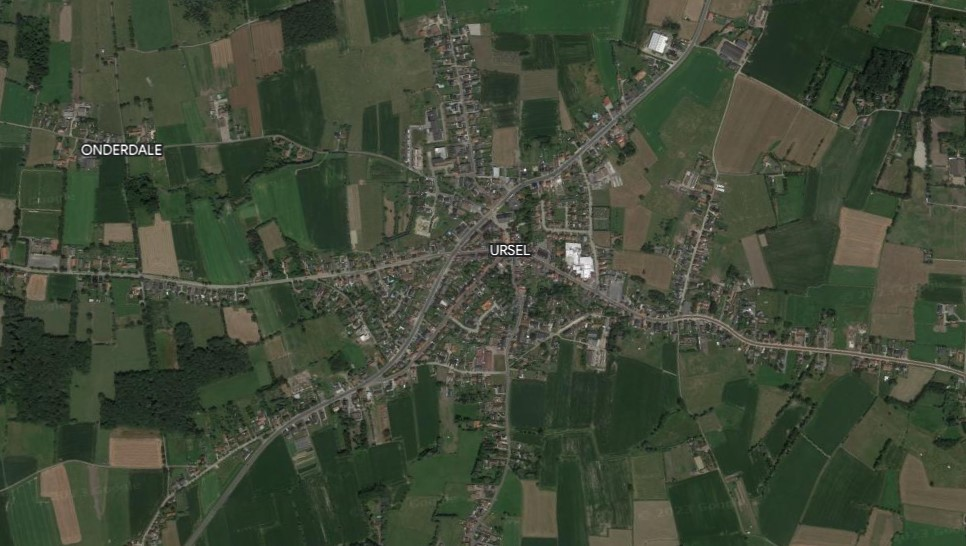

Ontwerpdossier
Voor het vak Graphic Design hadden we de opdracht gekregen om een ontwerpdossier te maken over een product en hiervan moest je ook drie mockup's maken.

Ik ben Eline De Roo en ben 19 jaar. Ik ben een student die Industrieel Ingenieur Industrieel Ontwerpen aan de universiteit Gent campus Kortrijk studeert. Vooraleer ik studeerde aan de universiteit heb ik eerst twee jaar moderne wetenschappen in Zomergem gevolgd. Hierna heb ik vier jaar Industriële wetenschappen in Sint-Denijs-Westrem gevolgd.
Mijn hobby’s zijn voetballen, bakken en reizen. Mijn interesses zijn het maken van websites en apps maar AI en VR vind ik ook heel interessant. Sommige creatieve dingen kan ik ook interessant vinden zoals 3D-geprintte dingen enz. Ik ben een hele grote dierenliefhebber en zelf heb ik ook veel huisdieren: een kat: Snoetie, een hond: Charlie, 2 kippen, kleine visvijver met veel vissen en heb ook nog konijnen en kanaries gehad.
Ik ben ook sportief, wou eigenlijk al van kleinsafaan voetballen maar mocht dit pas 5 jaar geleden doen van mijn moeder. Hiervoor heb ik wel andere sporten gedaan zoals 5 jaar volleybal, 2 à 3 jaar tennis en enkele maanden zwemmen.
Mijn droom is om zo veel mogelijk landen van de wereld te bezoeken. Enkele toffe reizen die ik al gemaakt heb met mijn familie: Chicago en Beaverdam met mijn meter om mijn nonkel te bezoeken; Sardinië, Malta, enz. met mijn ouders en mijn zus. De reizen met mijn ouders en mijn zus zullen niet op dezelfde plaats zijn. Normaal ging ik ook al naar Zuid-Afrika geweest zijn maar dat jaar is Corona uitgebroken dus die reis is helaas niet doorgegaan. Dit jaar zouden we naar Bali op reis gaan en kijk er heel hard naar uit. Ik zou graag nog veel reizen naar verschillende landen om zo meer culturen en andere dingen te leren kennen. Neem gerust contact op of bekijk hieronder mijn eerdere werken.
Bekijk hier mijn eerdere werken:
Voor het vak grafische ontwerpcommunicatie het deel visualisatie technieken moesten we een render opdracht doen. De opdracht was dat je 4 renders moest maken: 1 render waarbij product in context, 1 render waarbij product in detail zodat je verschillende materialen ziet, 1 render in een studio en 1 render die een wireframe heeft.
Voor het vak grafische ontwerpcommunicatie het deel visualisatie technieken moesten we een foto opdracht doen. De opdracht was dat je 4 foto's moest trekken: 1 foto met een lichtspoor, 1 foto met een product in context en 2 foto's in een basic infini waarbij op 1 foto een relevant lichaamsdeel zichtbaar moest zijn.
Voor het vak opkomende technologieën moesten we een robot maken met behulp van p5javascript om daar dan later andere oefeningen mee te maken. Mijn robot is hond. De eerste oefening is gewoon een robot maken. De tweede oefening is dezelfde robot opnieuw te maken maar deze keer met variabelen.
Laten we contact opnemen. Stuur mij een bericht:
Ursel, België
Tel.: +32 483 00 62 39
Email: elinerootje@gmail.com
